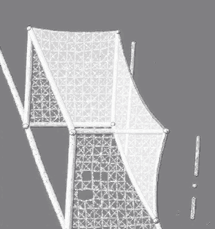

Oblique goal — Reference | V1 | V2 (nearest-neighbour, checkerboard = transparent)
Comparison fixture only — nothing here is integrated. The sandbox still renders
procedural Goal V3. V2 status: PENDING_VISUAL_REVIEW.
 Reference input (isolated, grey-neutralized, 312×332)
Reference input (isolated, grey-neutralized, 312×332)
 V1 (64×68 shown ×4) — orientation proof, rejected
V1 (64×68 shown ×4) — orientation proof, rejected
 V2 derived transparent (312×332 native)
V2 derived transparent (312×332 native)
V2 enlarged (×2)
V2 ×2 — cord/intersection readability
V2 at approximate gameplay scale
≈30% (crossbar ≈ 2.44 m at CAMERA_V1 px/m)
≈40% (closer framing)

V2 raw original (opaque grey bg, ×0.5) — stored untouched